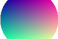

Переменные и calc()
Блок с цветом и отступами из CSS-переменных; padding = calc(var(--gap) * 1.5).
Этот текст зелёный — var(--missing, green) с запасным значением.
Ширина min(300px, 50%), отступ clamp(…).
| Позиция | Цена |
|---|
| Первая | 10 |
| Вторая | 20 |
| Третья | 30 |
| Четвёртая | 40 |
| Пятая | 50 |
Псевдоэлементы
::before и ::after
Ссылка на документ, цитата: генерируемые кавычки
, полеИмя.
Значок, созданный через ::before.
Счётчики
- Введение
- Основная часть
- Теория
- Практика
- Заключение
Структурные псевдоклассы
- Первый (жирный, нечётный)
- Второй
- Третий (нечётный)
- Четвёртый
- Последний (подчёркнут)
один два три четыре пять

div:has(> img) — с зелёной рамкой